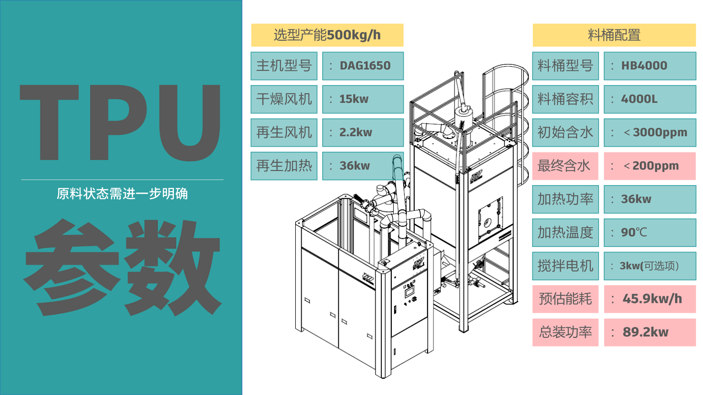

双桶分子筛 vs 蜂巢式 — 为什么我们的路线更优
完整技术对比，快速判断两种方案在除湿性能、可靠性和适用场景上的差异。
| 对比项 | 双桶分子筛 | 蜂巢式除湿干燥机 |
|---|---|---|
| 除湿核心 | 球状分子筛 | 粉状分子筛 |
| 结构形式 | 圆柱状容器 × 2 | 圆柱状容器 × 1 |
| 工作方式 | 双桶切换，交替使用，保证连续稳定除湿 | 同步带牵引，绕中轴转动 |
| 露点表现 | -80℃，适合对含水率要求极高的工况 | 恒定 -40℃，但不能长期保持性能 |
| 运行可靠性 | 全方位故障检测，寿命长，可维护更换 | 长期运行可能风化、碎裂、粉化 |
| 适用场景 | 适合大产能、低含水率要求高的生产环境 | 适合小产能、含水率要求低的应用 |

从监控、巡查到能耗追溯，形成一套持续在线的管理闭环。
关键运行数据持续采集，状态变化及时可见。
笔记本、手机、大屏均可访问，现场与远程并行管理。
全天候巡视设备运行，提前发现异常降低停机风险。
历史能耗记录可回溯，便于优化策略与成本核算。